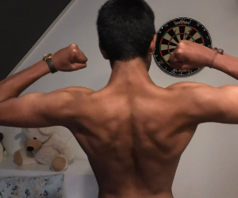
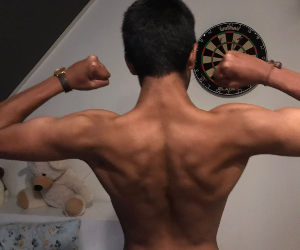

Op deze pagina ga ik vertellen wat mijn hobbies zijn. Ik heb meerdere hobbies en een van
mijn hobbies is
voetbal. Ik speel bij SV Koedijk JO17-2. Onze team is een vriendenteam en dat kwam
omdat
we in de zomer
een idee hadden om weer om op voetbal te gaan. Maar toen kwam er iemand met een top idee en dat was om
een eigen vriendenteam te gaan maken. Mijn positie met voetbal is keeper en ik ben ook
eerste keeper bij
het team.
Ik heb nog een hobbie en dat is naar de sportschool gaan. Ik ga altijd met mijn
vrienden
naar de sportschool. Mijn doel is om in de zomer heel gespierd te worden en helemaal fit. Ik weeg nu
niet zo
heel veel en ik ben nu alleen maar aan het bulken. Bulken is heel veel eten en dat moet heel veel
calorieën bevatten en
moet dan zo weinig mogelijk vet inzitten zodat je met zo min mogelijk vet aan komt. Mijn favoriete wat
ik vaak doe is
bankdrukken. Dat is met een stang met gewichten naar benenden en je borst aanraken en
dan de stang
drukken vanaf je borst.